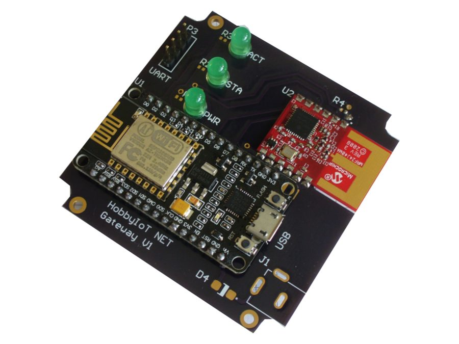
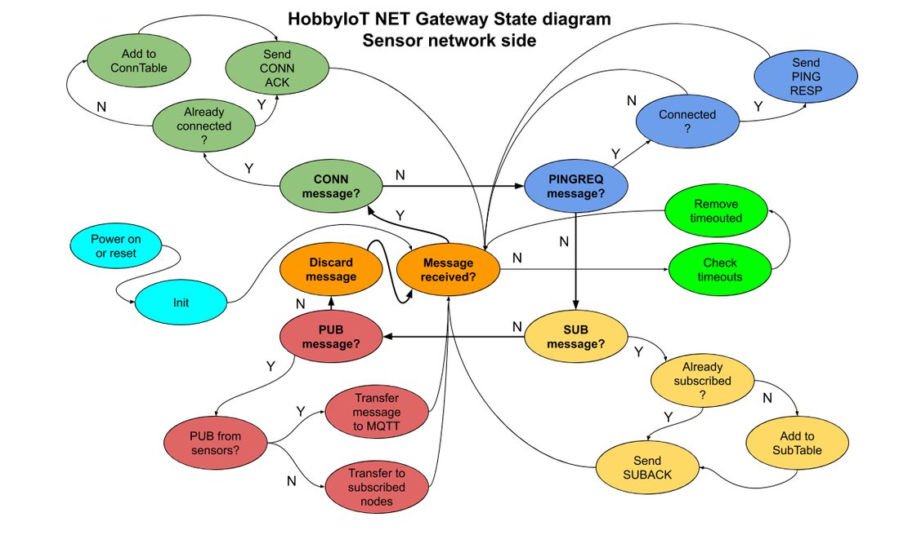

Home / Earlier projects / HobbyIoT NET
HobbyIoT NET – MQTT-SN over 802.15.4
A sensor and actuator network built on MQTT-SN (MQTT for Sensor Networks) over a 2.4 GHz 802.15.4 radio link. End devices measure and control parameters; a gateway translates their messages to MQTT.


Architecture
End devices
MQTT-SN clients with an MRF24J40MA transceiver. Sensors connect over 1-wire or I²C; firmware is Arduino code.
Gateway
Arduino-based MQTT-SN gateway on an ESP12 NodeMCU with an MRF24J40MA. It speaks 802.15.4 to devices and MQTT over WiFi to the broker.
Broker & clients
An MQTT broker (typically a Raspberry Pi) and any smartphone or computer as MQTT client.
Source & hardware
- MQTT-SN_GW_802154_V1 – gateway firmware (Alpha 1)
- MQTT-SN_802.15.4_Client – actuator end device firmware
- DeviceT1_THR_RLP – sensor end device software
- Gateway board on CircuitMaker · order at OSH Park
- End device board on CircuitMaker
- MQTT-SN specification v1.2 (PDF)
Other early projects
HobbyIoT DEN – an ESP8266 NodeMCU system for terrarium remote control and monitoring, using plain MQTT over WiFi.
History
- Apr 2018 – project issues tracked on GitHub and a Slack channel for collaboration.
- May 2018 – "MQTT-SN 802.15.4 Net" renamed HobbyIoT NET.
- Jun 2018 – further HobbyIoT projects added.
These projects are kept for reference and are no longer actively developed. Current work is on H2S-Dev and H3S-Dev.